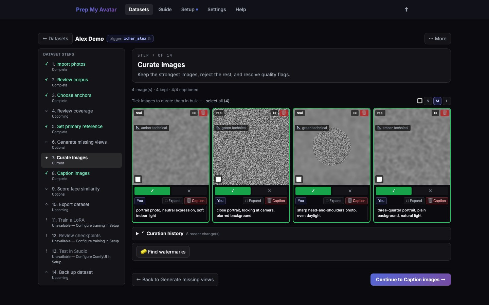

First run · 14 of 21
Step 14: Curate images
Curation creates the final kept set. Only images marked with a check are included in captions, export, and training.

Before you begin
Open Curate images in the dataset step navigator. Its URL ends in /curate. The grid, rescue comparisons, watermark tools, cleanup, and curation history are together on this page.
Do this
- Open each undecided image at full size when the thumbnail is not enough.
- Select ✓ to keep a useful image or ✕ to reject it.
- Reject generated images that do not resemble the intended person.
- Remove near-duplicates unless each one contributes meaningfully different evidence.
- Use the crop tool only when it improves framing without removing important context.
- Resolve every reconstruction or rescue comparison by choosing one version or neither. Never keep both sides of an exclusive pair.
- Select Find watermarks. If anything is flagged, select Clean (N) to process the flagged set or Review flagged (N) to inspect it first. In review, check the highlighted box, then clean the watermark, dismiss a false positive with Not a watermark, or reject the image. Without the optional inpainting tool, the app can crop a watermark near an image edge; an off-centre mark may need the tool installed or a manual edit outside the app.
- Watch the composition meter and add real variety where it is weak.
- Use curation history if you need to undo a recent keep or reject decision.
- Select Continue to Caption images.
You are finished when
No image says it is awaiting a decision, every comparison is resolved, at least one image is kept, every flagged watermark is resolved, and the navigator marks Curate images — Complete.